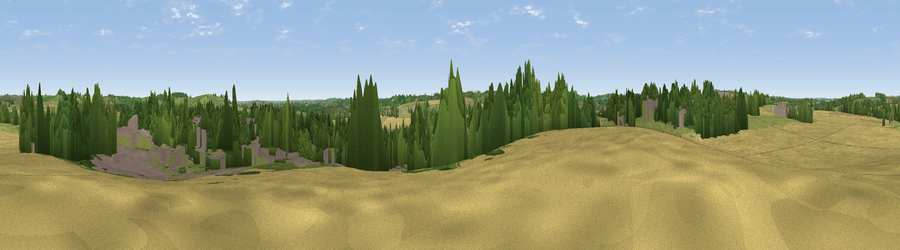

Flore East Hill
#38004 in England · top 71% of its area beats it · near FloreThe view, rendered

A 360° render of this exact spot computed from the terrain model, tree cover and land cover — summer colours, afternoon light, calibrated against photographs of famous viewpoints. Real trees, hedges and buildings will differ in detail.
The panorama
Grey silhouette: terrain skyline in each direction (720 bearings, Earth curvature and refraction included). Dashed green: skyline with trees (+15 m) and buildings (+8 m) as obstacles. Blue strip: how far the ground is visible on each bearing.
Where the view opens
Wedge length = distance to the farthest visible ground on that bearing (vegetation-aware). Rings at 10, 25 and 50 km.
What fills the view
34% grassland · 34% cropland · 22% woodland · 11% built-up
Angular shares of the visible panorama (visual magnitude), not map area. Landscape diversity 0.57 (0–1 Shannon).
Key numbers
More beautiful places nearby
The staircase of upgrades: each row has a higher view potential than everything closer. Driving times are estimates from straight-line distance, calibrated against real road routing — check an actual route before setting out.
| Place | Direction | Drive | Score |
|---|---|---|---|
| Glassthorpe Hill | E · 2 km | ~6 min | 44.9 |
| Viewpoint near Norton | WNW · 6 km | ~13 min | 56.8 |
| Viewpoint near Staverton | W · 9 km | ~18 min | 63.3 |
| Big Hill - Staverton Clump | W · 9 km | ~18 min | 68.4 |
| Viewpoint near Northend | WSW · 26 km | ~42 min | 69.7 |
| Viewpoint near Northend | WSW · 26 km | ~42 min | 70.3 |
| Viewpoint near Radway | WSW · 29 km | ~45 min | 71.7 |
| Viewpoint near Ilmington | WSW · 47 km | ~68 min | 72.6 |
52.23885, -1.05991 · source: osm peak · position refined by local search. Computed location — check access rights before visiting.